Grifinória
Harry Potter
Corajoso e leal aos amigos, Harry descobre em Hogwarts um novo lar e seu lugar no mundo bruxo.
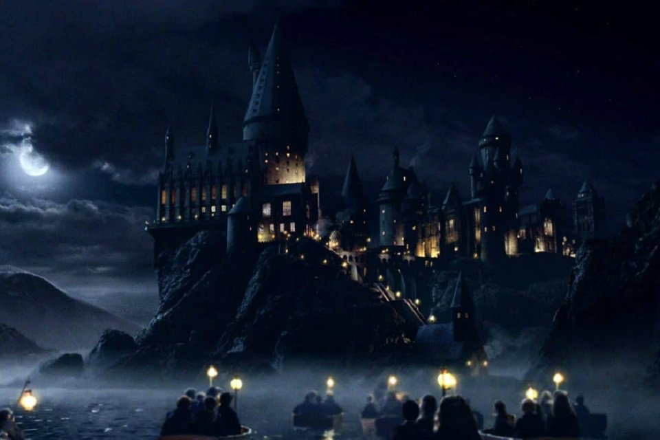
BEM-VINDO AO MUNDO BRUXO
Uma escola de magia. Quatro casas. Muitas histórias para descobrir.
Explore HogwartsHarry Potter descobre que é um bruxo e passa a estudar na Escola de Magia e Bruxaria de Hogwarts. Lá, conhece novos amigos, aprende feitiços e enfrenta os mistérios do mundo bruxo.
Em Hogwarts, os alunos fazem parte de uma das quatro casas: Grifinória, Sonserina, Corvinal e Lufa-Lufa. Cada uma tem sua história e valoriza diferentes qualidades.
Conheça personagens que passaram por Hogwarts. Escolha uma casa para ver seus integrantes.
Grifinória
Corajoso e leal aos amigos, Harry descobre em Hogwarts um novo lar e seu lugar no mundo bruxo.
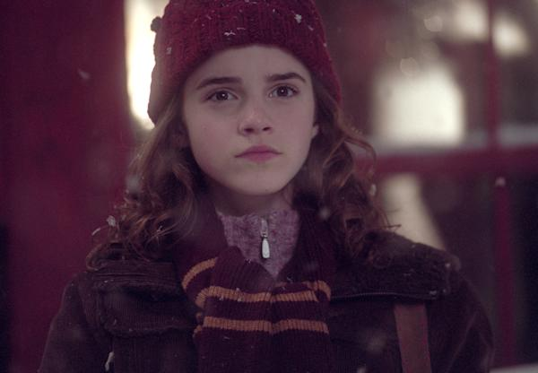
Grifinória
Estudiosa e determinada, Hermione usa sua inteligência para ajudar Harry e Rony nas aventuras em Hogwarts.
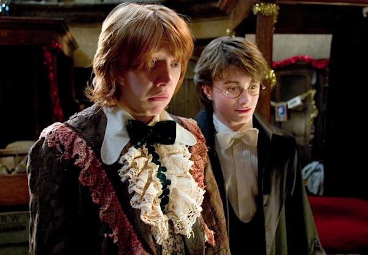
Grifinória
Leal e bem-humorado, Rony é um dos melhores amigos de Harry e está sempre ao lado do trio.
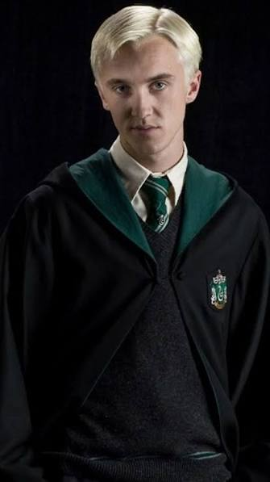
Sonserina
Orgulhoso de sua casa e de sua família, Draco é um dos rivais de Harry durante os anos na escola.
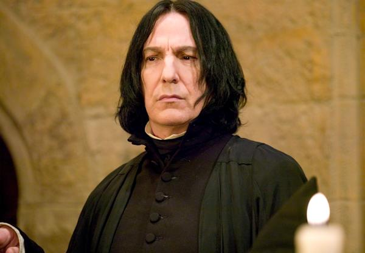
Sonserina
Professor de Poções e diretor da Sonserina, Snape é conhecido por sua postura exigente e misteriosa.
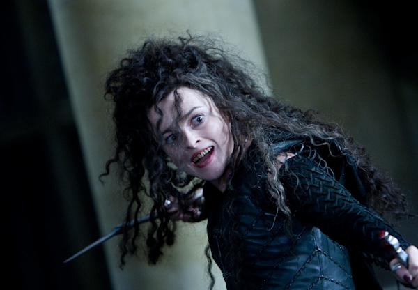
Sonserina
Integrante da família Black e seguidora de Voldemort, Bellatrix é uma das bruxas mais temidas da saga.
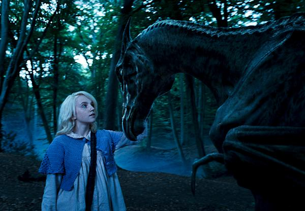
Corvinal
Criativa e de mente aberta, Luna enxerga o mundo de um jeito próprio e se torna uma grande amiga de Harry.
Corvinal
Aluna da Corvinal, Cho joga como apanhadora no time de quadribol de sua casa.
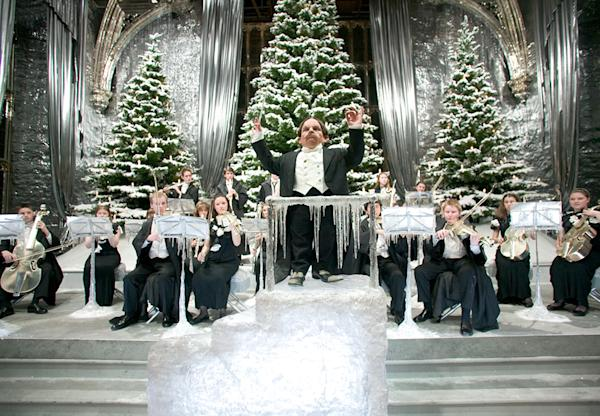
Corvinal
Professor de Feitiços e diretor da Corvinal, Flitwick compartilha seu conhecimento de magia com os alunos.
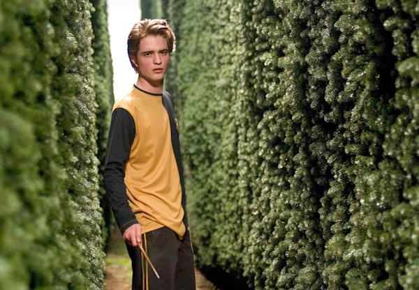
Lufa-Lufa
Talentoso e justo, Cedrico representa Hogwarts no Torneio Tribruxo e demonstra respeito pelos adversários.
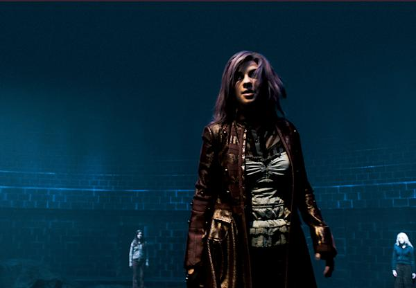
Lufa-Lufa
Corajosa e divertida, Tonks trabalha como auror e consegue mudar a própria aparência por ser metamorfomaga.
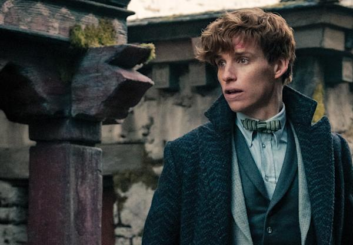
Lufa-Lufa
Antigo aluno da Lufa-Lufa, Newt estuda e protege criaturas mágicas em suas viagens pelo mundo.
UM POUCO DE MAGIA
Até uma pequena luz pode ajudar a explorar o desconhecido.
O feitiço Lumos acende uma luz na ponta da varinha. Para apagá-la, o bruxo usa Nox.